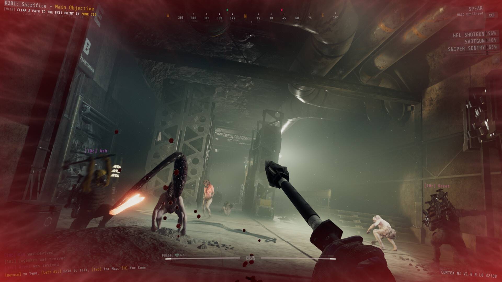

GTFO
Your team of prisoners is dropped into the Rundown when a new Work Order is issued by The Warden, the mysterious entity holding you captive. The Rundown is a series of expeditions, each one taking you deeper into a decayed research facility called The Complex. You descend level by level, scavenging tools and resources that help you survive in a perilous network of tunnels where gruesome creatures lurk in every shadow. Complete all the expeditions to fulfill the Work Order and clear the Rundown. GTFO is designed for prisoner teams of four, putting cooperation at the core of the experience.
Rating
Rating: Very positive
Release Date: 10 dec 2021
Publisher: 10 Chambers
Developer: 10 Chambers



System requirements
- OS: Windows 7 64-Bit or later
- Processor: Intel Core i5 2500K or AMD equivalent
- Memory: 8 GB RAM
- Graphics card: NVIDIA GeForce GT 1030 or Radeon HD 7850
- DirectX: Version 11
- Network: Broadband internet connection
- Storage space: 15GB available space